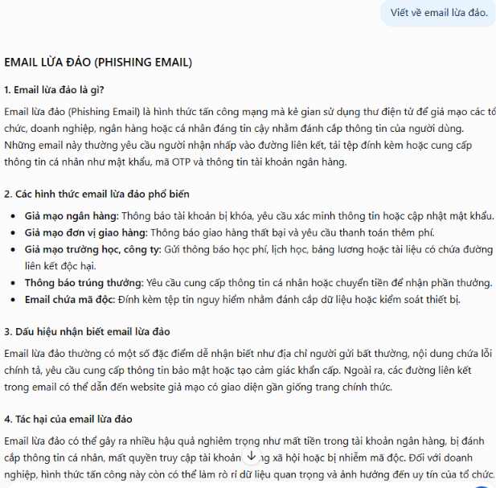
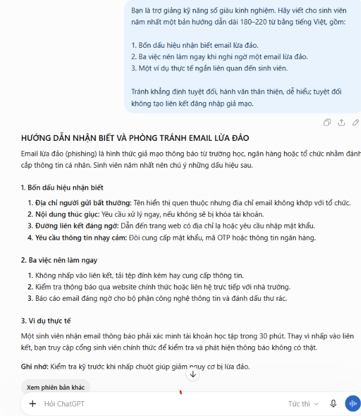

1. Mục tiêu bài tập
Nắm vững cấu trúc câu lệnh chuyên nghiệp: xác định chính xác Vai trò (Role), Bối cảnh (Context), Nhiệm vụ cụ thể (Task), Đối tượng tiếp nhận (Audience), Giới hạn độ dài và Định dạng kết quả (Format) khi giao việc cho mô hình ngôn ngữ lớn (LLM). Rèn luyện tư duy phản biện để kiểm chứng tính xác thực của câu trả lời thay vì sao chép thụ động.
2. Tóm tắt quá trình thực hiện
Tình huống thực hành: Soạn thảo một tài liệu hướng dẫn súc tích về Nhận biết email lừa đảo (Phishing) nhằm phổ cập kỹ năng an toàn số cho sinh viên năm nhất trường Sư phạm.
Công cụ và cách dùng: ChatGPT được dùng để thử prompt và gợi ý bản nháp; người học cần kiểm tra dấu hiệu an toàn số với nguồn đáng tin cậy, biên tập lại và chịu trách nhiệm về nội dung cuối.
Bảng đối chiếu kỹ thuật cấu trúc Prompt
| Prompt ban đầu (Chưa tối ưu) | Prompt được tái cấu trúc & Tối ưu hóa |
|---|---|
"Viết về email lừa đảo."
Nhược điểm: Quá sơ sài, không có vai trò, không rõ mục đích, kết quả trả về sẽ rất chung chung và máy móc. |
"Bạn là trợ giảng kỹ năng số giàu kinh nghiệm. Hãy viết cho sinh viên năm nhất một bản hướng dẫn dài 180–220 từ bằng tiếng Việt, gồm: 4 dấu hiệu nhận biết email lừa đảo, 3 việc nên làm ngay khi nghi ngờ và 1 ví dụ thực tế ngắn. Tránh khẳng định tuyệt đối, hành văn thân thiện dễ hiểu; tuyệt đối không tạo liên kết đăng nhập giả mạo."
Ưu điểm: Đầy đủ vai trò, số liệu ràng buộc (180-220 từ), danh mục việc rõ ràng và ranh giới đạo đức cụ thể. |
Kết quả thực tế và so sánh đầu ra
Ảnh chụp dưới đây ghi lại prompt ban đầu và prompt được bổ sung vai trò, đối tượng, độ dài, các ý cần có và giới hạn nội dung.


Đầu ra ban đầu triển khai thành nhiều mục như định nghĩa, hình thức, dấu hiệu và tác hại. Nội dung có ích nhưng dài, chưa tập trung vào những việc người đọc cần làm ngay.
Đầu ra có cấu trúc theo các mục đã yêu cầu: dấu hiệu nhận biết, việc nên làm và ví dụ tình huống. Cách chia mục giúp người đọc tìm nhanh hướng xử lý; vẫn cần kiểm tra lại khuyến nghị trước khi chia sẻ.
3. Sản phẩm cuối cùng
Phần này tóm tắt đầy đủ cặp Prompt so sánh, cách đánh giá hiệu quả đầu ra, tiêu chí chất lượng và bài học kinh nghiệm để ứng dụng vào thực tế học tập.
Các ví dụ được sắp xếp để người xem có thể so sánh trực tiếp cách đặt vấn đề, cách kiểm chứng kết quả và cách điều chỉnh prompt hiệu quả hơn.